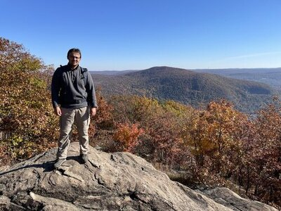

I was born in Bistrița, a small charming town with a great history, nested in the enchanting hills of Northern Transylvania, Romania. In 2015 I emigrated to the Unites States, where seven years later I received my Phd in History from the University of Florida, Gainesville.
However, recently, I decided to embark on a new career path in web development. This is an exciting and exhilarating new challenge.
I am a lover of nature and a hiking enthusiast. I enjoy walking, thinking, and contemplating amidst lush hills and majestic mountains.